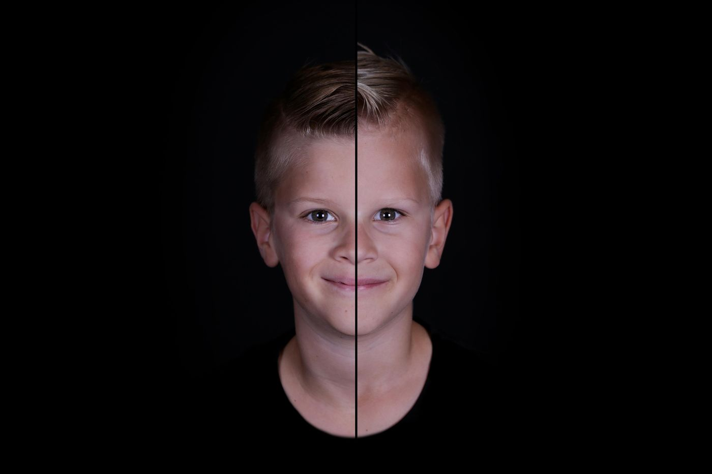
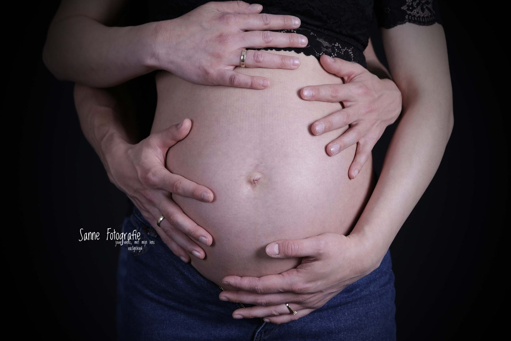
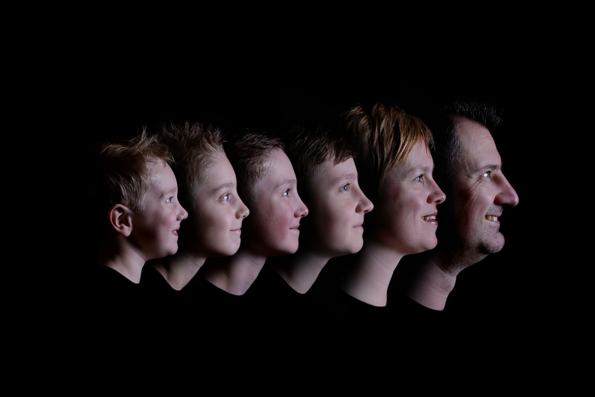
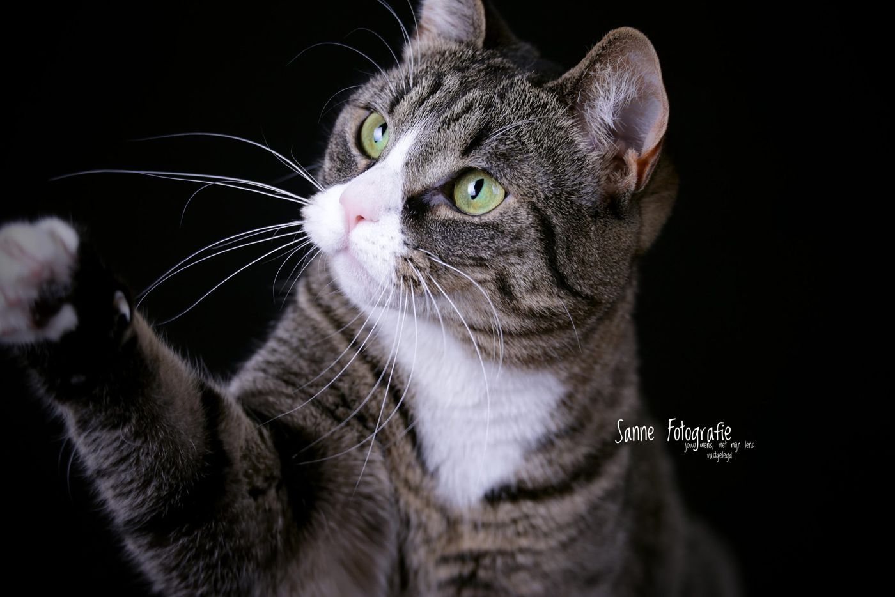
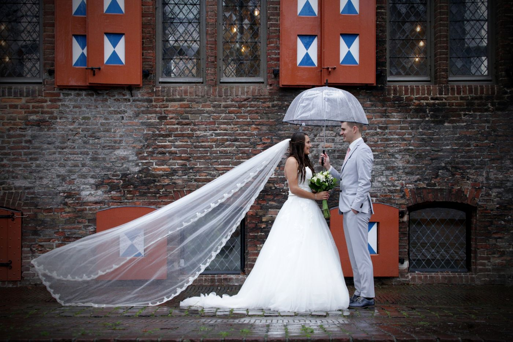
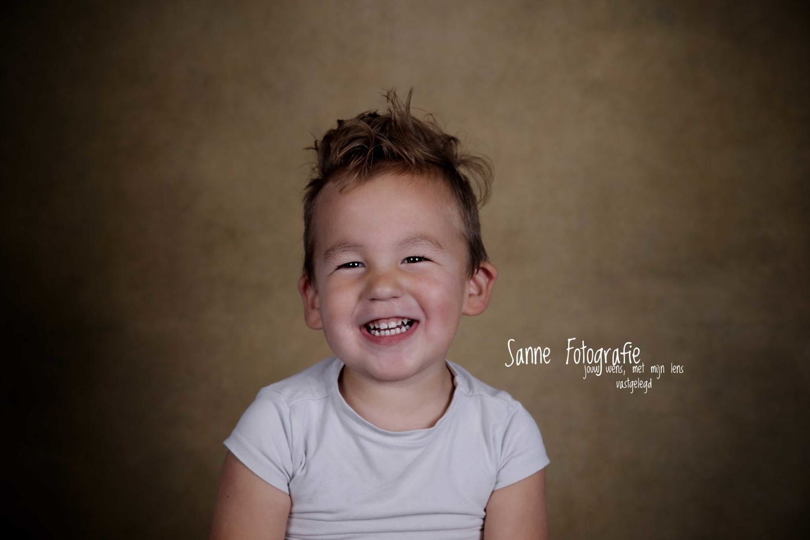
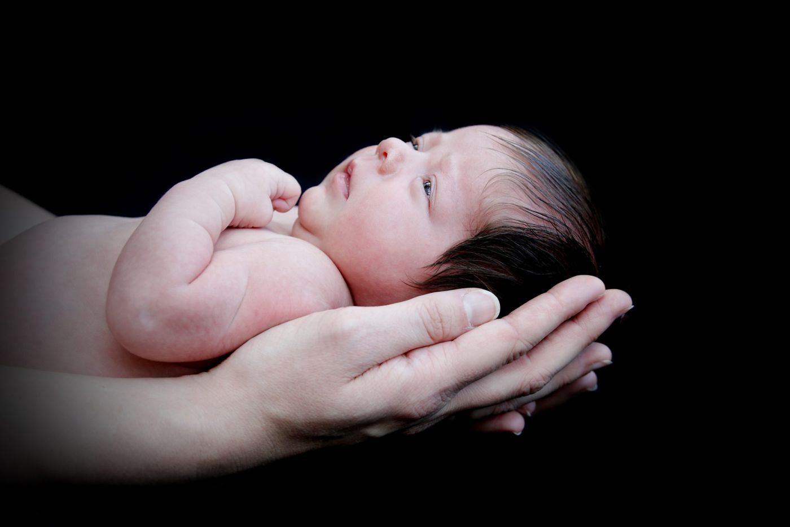
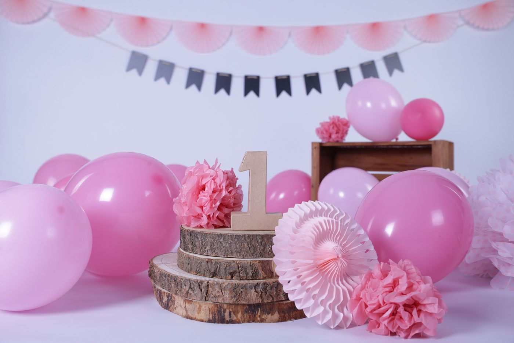
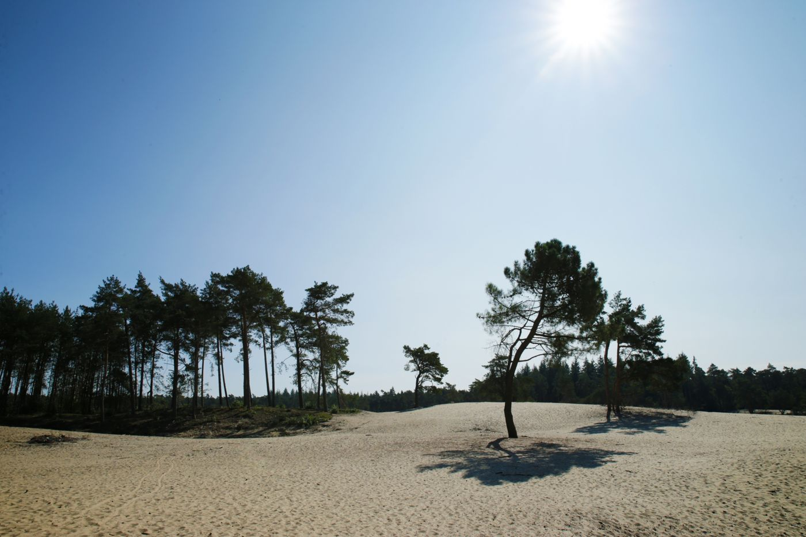
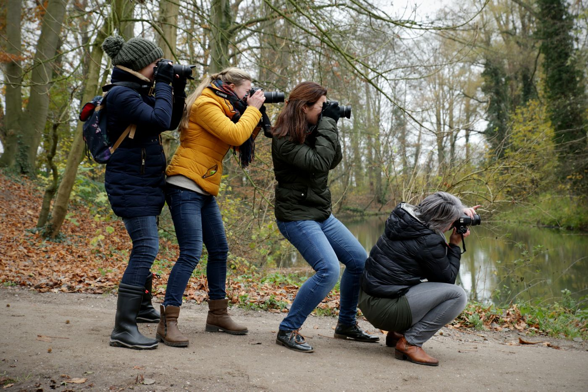

Portretten, zwangerschap, newborn, bruiloft, dieren en meer. Fotoshoots in de studio in Zwolle of bij jou op locatie.

Een greep uit het werk. Van kleine kinderen tot een kat die naar de camera slaat.








Per shoot, inclusief het aantal bewerkte foto's dat erbij staat.
Bij alle fotoshoots, behalve de Sahara shoot, krijg je naast de bewerkte foto's ook alle andere foto's die ik tijdens onze afspraak maak, gratis en onbewerkt.
Meer groottes, groepen en productfoto's (vanaf € 50) staan op de volledige tarievenpagina. Alle shoots kunnen op locatie, behalve de cakesmash. Reiskosten zijn € 0,50 per km vanaf Veldbeemdgras 34, heen en terug.

Dat moment waarop iemand eerst nog wat ongemakkelijk voor mijn camera staat en daarna langzaam zichzelf laat zien.
Sanne woont in Zwolle en fotografeert eigenlijk al altijd. Haar studio groeide uit een kleine opstelling thuis, toen steeds meer kinderen en volwassenen voor haar camera wilden staan.
Ze geeft ook workshops fotografie.
Enthousiast geworden? Stuur een bericht. Sanne reageert zo snel mogelijk. Blijft het stil, kijk dan even in je spam.
Veldbeemdgras 34